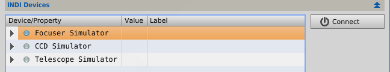
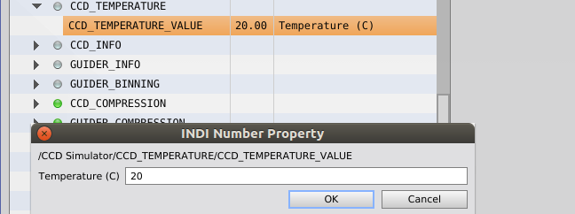

Sends commands to an INDI server to control astronomical devices. [more]
Categories: Automation, Control
Keywords: INDI, Device, Instrument, Automation, Control
[hide]
[hide]
The INDI Device Controller module is an INDI client which can be used to control astronomical devices like CCD cameras, telescope mounts, or filter wheels. The client sends device independent commands (INDI Device Properties) to an INDI server which translates the commands to devices specific commands by routing the commands to device hardware drivers (see [1] for a more detailed description). The INDI client/server communication uses the INDI protocol which is an official IANA registered TCP/IP protocol.
So the INDI controlling system can be set-up in two configurations:
For example, you can install the INDI server on your Linux or Mac computer [2], where all hardware devices are plugged-in, start the INDI server and connect the INDI Device Controller (use host localhost) to the server.
Alternatively, you can use a remote (e.g. Windows) computer to remotely connect to the INDI server running on a Linux or Mac OS computer by specifying the remote host. There is no INDI server implementation for Windows, but there is an INDI wrapper for ASCOM available [3].
[hide]
The INDI Device Controller module contains three sections
INDI Server Connection
Specify the host and port number and connect to the INDI server.
After successful connection, the server sends a list of device names which are displayed in the INDI Devices section. If the connection was not successful, a corresponding message is displayed in the section Last server message.
Select and connect to the INDI devices which are available on the INDI server.
To connect a hardware device with the INDI server, select the top level node in the INDI Devices tree-box and press the Connect button.
After successful connection, the server sends a list of device properties which are displayed in the INDI Devices tree-box. Device properties are the control parameters of a hardware device, e.g. the property CCD_TEMPARATURE controls the chip temperature of a CCD camera.
Edit and send new INDI property values to the INDI server
All properties of a CCD device are listed as subnodes of the device in the INDI Devices tree-box. A property consists of one-or-many elements which are grouped in a property tree-node and its values can be displayed by expanding the node. There are three different types of property values
It is possible to send a new target property value to the INDI server by selecting the property element and pressing the Edit button. A new dialog appears which enables to a enter a new value for the property.
Messages from the INDI server are displayed at the bottom of this section.
[1] INDI library, What is INDI? : An overview
[2] INDI library, Linux and OS X: Download INDI software
[3] Cloudmakers, Windows: An INDI wrapper for ASCOM
Copyright © 2014-2018 Klaus Kretzschmar